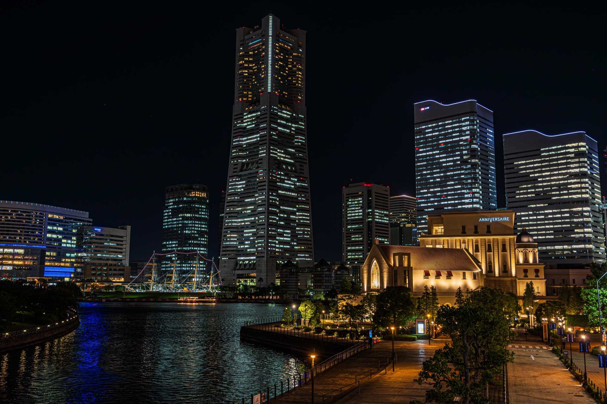
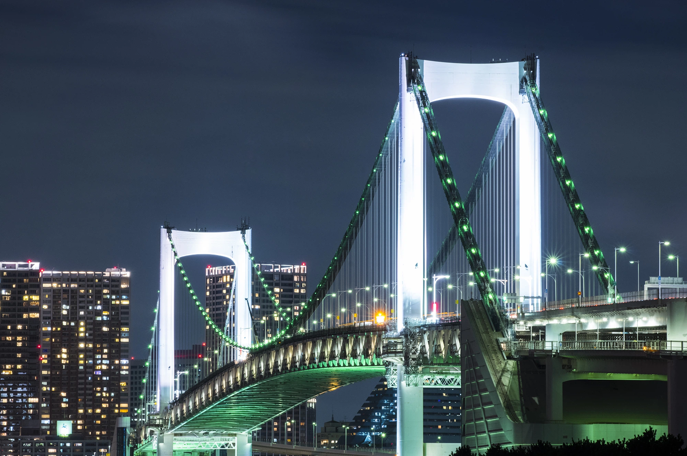

BGM: Popsicle by KODOMOi https://soundcloud.com/kodomoimusic
Creative Commons — Attribution 3.0 Unported — CC BY 3.0
無料ダウンロード / ストリーム: http://bit.ly/2BoP4os
ミュージックプロモーション: Audio Library https://youtu.be/z6mKD6hpKBU